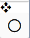

6.14. Object list

This is the list on the left side of the WebGL screen. Each loaded object is grouped here.
6.14.1. Top
- arrow button:
Press to collapse the object list and make it thinner.
- combo box:
Select an object type. The list below shows only objects of that type.
Note
On mobile devices with screen resolutions below a certain size, the object list is displayed in an overlay format.
This means that the panel will automatically collapse when you do something.
6.14.2. Bottom
- List:
Object list. The following types are displayed here:
VRM, other 3D object, camera, effect, light, image, text, UI image , stage
Note
System effects, audio are not shown here.
The timelines of roles to which the selected object is assigned are also automatically selected.
Long names are truncated. Instead, the full name is displayed as a tooltip when hovered over with the mouse cursor.
6.14.3. Right click menu
Right-clicking in the object list allows you to perform individual operations on that object.

- rename:
Change the display name of an object.
- Information:
Displays the information screen only for VRoid/VRM.
- focus the camera:
Move the main camera so that this object is centered on the screen.
- Register pose to current frame:
Use in animation projects. Registers the current pose to the current keyframe.
- reset all bones:
Reset pose back to T pose (default).
- delete model:
Remove the object from the app.
- Delete both this object and roll:
Delete an object and its associated role from the app.
6.14.4. V-pad (left)
Introduced from ver 2.7.0. When the panel is folded, you can use the same functions as the v-pad.
Hint
Mainly effective for operating mobile devices.
Caution
It is not displayed in mobile display (/mui) mode.
Swipe up and down (drag and drop) to move the main camera forward or backward. Equivalent to operating the mouse wheel. |
|
 |
Swipe up and down (drag and drop) to raise and lower the main camera. Swipe left or right to move left or right. [1] |
Move the main camera and the object at the center of rotation closer together or farther apart. |
About the speed of movement and rotation
You can adjust the speed using the V-pad’s Movement Speed and Rotation Speed’ in the Application tab of the application settings.